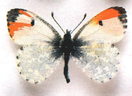

Az éjjeli lepke jellemzői
A nappali lepkék felismerhetők arról, hogy napközben aktívak, általában élénk színűek, csápjuk bunkós, és nyugalomban a szárnyukat hátuk fölött összecsukva tartják.

A nappali lepkék hátsó szárnyának töve kiszélesedő, megerősített, és repülés közben alátámasztja az elülső szárnyat.
 Az éjjeli lepkék
Az éjjeli lepkék